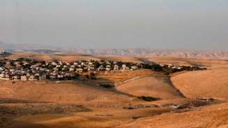

par Michel Calvo 27 mai 2020 Traduction du texte original: Israel: The Settlements Are Not Illegal

La Déclaration des Nations Unies sur les droits des peuples autochtones (« la Déclaration »), adoptée par l'Assemblée générale des Nations Unies le 13 septembre 2007, à la majorité de 144 États favorables, 4 qui ont voté contre et 11 qui se sont abstenus (A/RES/61/295), a reconnu que les peuples autochtones ont droit aux terres, aux territoires et aux ressources qu'ils possèdent et occupent traditionnellement ou qu'ils ont utilisés ou acquis (Art. 26.1) et qu'ils ont le droit de ne faire l'objet, dans l'exercice de leurs droits, d'aucune forme de discrimination (Art.2). Avec les pratiques des États, le statut juridique et les droits des peuples autochtones ont évolué et se sont cristallisés en « droit coutumier international ». Par exemple, la Commission interaméricaine des droits de l'homme a déclaré qu'«il existe une norme internationale de droit coutumier qui affirme les droits des peuples autochtones sur leurs terres traditionnelles». La Cour africaine des droits de l'homme et des peuples a affirmé que les droits fonciers des peuples autochtones sont protégés et que ces droits sont des « principes généraux de droit ». La France, l'Angleterre, la Belgique, le Luxembourg, l'Allemagne, etc., ont voté en faveur de la Déclaration. Depuis 2007, l'Australie, le Canada, la Nouvelle-Zélande et les États-Unis qui ont voté contre ont officiellement approuvé la Déclaration en 2010. Dans leurs relations avec Israël (qui a également voté en faveur de la Déclaration), ces États ne peuvent prétendre que la Déclaration ne s'applique pas aux Juifs israéliens, car une telle position équivaudrait à une discrimination raciale flagrante.[1] Selon le droit international, les Juifs sont le peuple autochtone, aussi connus sous le nom de peuple premier, peuple indigène, ou peuple natif de la terre appelée Judée- Samarie, Palestine ou Terre Sainte, et remplissent donc les critères exigés par le droit international. Les Juifs sont le peuple qui était le peuple de la Judée-Samarie il y a 3 500 ans, lorsque la Terre a été accordée aux Juifs par le Tout-Puissant. Les dirigeants du monde, qui ont choisi de faire abstraction de l'histoire, se réfèrent de manière trompeuse à la Judée-Samarie comme la « Cisjordanie », ou la Rive occidentale du Jourdain (qui comprend Israël) ou les « Territoires palestiniens occupés ».
Après la Déclaration Balfour (1917), le Traité de Lausanne (1923), le Mandat britannique (1922), la Résolution de San Remo (1920) et le Traité de Sèvres (1920) ont créé le droit international, reconnu et rétabli les droits autochtones historiques des Juifs à leur Terre. Les signataires de ces traités et du Mandat (Grande-Bretagne, France, Turquie, Japon, Italie, etc.), sont liés contractuellement à ces accords. Dans le Mandat pour la Palestine accordé à la Grande-Bretagne en août 1922, la Société des Nations reconnaissait « les liens historiques du peuple juif avec la Palestine et des raisons pour la reconstitution de son foyer national dans ce pays ». Le droit du peuple juif de s'installer dans la Terre de Palestine, sa patrie historique et d'y établir son État, son foyer national pour le peuple juif, est donc un droit légal ancré dans le droit international. La Déclaration sur les droits des peuples autochtones réaffirme le droit du peuple juif, en tant que peuple autochtone, et «en particulier leurs droits à leurs terres, territoires et Ressources». (UNDRIP - préambule). Les résolutions de l'Assemblée générale des Nations Unies stipulant que les colonies des Juifs en Judée-Samarie sont contraires au droit international, ne sont rien de plus que des recommandations et n'ont jamais abouti à des modifications des traités contraignants existants. Les résolutions du Conseil de sécurité de l'ONU stipulant que les colonies de peuplement en Judée-Samarie sont illégales ne sont pas contraignantes. Seules les résolutions prises en vertu du chapitre VII de la Charte des Nations Unies sont contraignantes pour tous les États membres de l'ONU. Par exemple, la résolution 2334 du Conseil de sécurité a été adoptée le 23 décembre 2016 par 14 voix contre 0. Quatre membres permanents du Conseil de sécurité - la Chine, la France, la Russie et le Royaume- Uni - ont voté en faveur, les États-Unis se sont abstenus. Cette résolution n'a pas été adoptée en vertu du chapitre VII de la Charte. Elle n'est pas contraignante. Cette résolution stipule que l'activité de colonisation israélienne constitue une « violation flagrante ». Elle n'a « aucune valeur juridique ». Cette résolution viole la Déclaration, le Mandat britannique et les autres traités. Le droit du peuple juif de « s'installer » en Cisjordanie, et le droit d'Israël d'annexer certaines parties de la Judée-Samarie (parties de la Palestine) découlent d’accords internationaux et du Mandat britannique (Rapport Levy du 9 juillet 2012). Conformément au Mandat, le droit d'annexer certaines parties de la Judée-Samarie est une conséquence directe du droit des Juifs de s'installer dans toute la Palestine, c'est-à-dire le territoire du mandat de 1936. L'article 80 de la Charte des Nations Unies (1945) reconnaissait la validité des droits existants acquis par les États et les peuples sous les différents mandats, y compris le mandat britannique sur la Palestine (1922), et le droit des Juifs de s'installer dans le pays de Palestine (Judée-Samarie) en vertu de ces instruments. (Pr. E. Rostow). Ces droits ne peuvent être modifiés par l'ONU. « A l'exception de ce qui peut être convenu dans les accords particuliers de tutelle... aucune disposition du présent Chapitre ne sera interprétée comme modifiant directement ou indirectement en aucune manière les droits quelconques d'aucun État ou d'aucun peuple, ou les dispositions d'actes internationaux en vigueur auxquels des Membres de l'Organisation peuvent être parties. » (Article 80, paragraphe 1 de la Charte des Nations Unies) Dans une série de décisions et d'avis consultatifs sur la Namibie, la Cour internationale de Justice a statué qu'un Mandat de la Ligue des Nations est un accord international contraignant comme un traité, qui continue comme une obligation fiduciaire de la communauté internationale jusqu'à ce que ses termes soient réalisés/remplis. Dans le cas de la Namibie, la Cour a confirmé la décision du Conseil de sécurité selon laquelle l'Afrique du Sud avait abandonné ses droits en tant que Pouvoir Mandataire en violant certaines de ses obligations fondamentales. Le Mandat a survécu en tant que fiducie (trust), sur la base de principes juridiques confirmés par l'article 80 de la Charte.
Comme le Mandat du Sud-Ouest Africain, le Mandat de la Palestine a survécu à la fin de l'administration britannique en tant que fiducie (trust) en vertu de l'article 80 de la Charte des Nations Unies (Pr. E Rostow). Les droits juifs de « s'établir » en Judée Samarie - Cisjordanie - Palestine existent donc; on ne peut pas sérieusement soutenir, comme le font l'Union Européenne, la France, la Grande-Bretagne, la Russie, la Chine et d'autres États, que les établissements - colonies israéliennes en Judée Samarie - Cisjordanie - Palestine sont illégaux et que l'annexion est contraire au droit international. Cette position est politique, pas légale. Malgré les résolutions contraires de l'ONU, l'établissement des juifs en Judée Samarie – Cisjordanie - Palestine n'est pas incompatible avec le droit international. Israël, l'État juif, foyer du peuple juif, en tant que membre de la communauté internationale a le droit, mais aussi le devoir, d'accomplir le Mandat dont la plupart des nations n'ont pas tenu compte, ayant peur du terrorisme et du monde musulman, animés par 2000 ans de haine religieuse et d'antisémitisme, et par opportunisme économique et financier. Cent trois ans se sont écoulés depuis la Déclaration Balfour, 73 ans après le rejet de la résolution 181 de l'Assemblée Générale des Nations Unies du 29 novembre 1947, 52 ans après la guerre des Six Jours de 1967 et 27 ans depuis les accords d'Oslo. Les accords d'Oslo de 1993 et 1995 ont été signés mais n'ont pas conduit à la paix. Les dirigeants arabes musulmans de Judée-Samarie et de Gaza ne veulent pas la paix, ils ont refusé l'offre d'Israël, faite en 2000 et en 2008, de vivre en paix. La participation de l'Appareil de Sécurité de l'Autorité palestinienne aux assassinats de Juifs depuis 1993 en est une preuve, ainsi que les « paiements pour tuer » versés mensuellement aux prisonniers condamnés pour des attaques terroristes. Les menaces de Mahmoud Abbas, Président de l'Autorité palestinienne, selon lesquelles les Palestiniens provoqueront un « soulèvement » après la Conférence de Bahreïn et après une annexion devraient être prises très au sérieux. Mahmoud Abbas n'est définitivement pas intéressé par la paix. Israël a le devoir de tirer les conséquences logiques de ce comportement et d'annexer tout ou partie des territoires de la zone C, de sécuriser l'existence de sa population à l'intérieur de frontières sûres, et de pouvoir recevoir ceux des 6 millions de Juifs qui vivent encore en exil, qui souhaitent ou souhaiteront s'installer en Israël.
L'auteur est né à Tunis, Tunisie. Expert en droit international, il était membre de la Cour internationale d'arbitrage de la Chambre de Commerce Internationale représentant Israël. Il est l'auteur du livre The Middle East and World War III – Why No Peace? Prefaé par le Colonel Richard Kemp.
[1] La France qui a voté en faveur de la Déclaration a fait pression en faveur d'une réponse sévère de l'UE à toute mesure d'annexion israélienne. Ce n'est pas une surprise puisque, en juin 2015, la Commission de l'élimination de la discrimination raciale restait préoccupée par l'incapacité de la France à reconnaître pleinement l'existence des peuples autochtones dans les collectivités territoriales d'outre-mer.